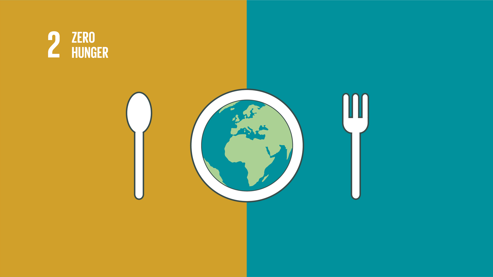

What is SDG 2?
Learn more about the sustainable Developmental goals (SDG) 2
June 25, 2024

Written in KNUST..
Understanding SDG 2: Zero Hunger Sustainable Development Goal 2 (SDG 2), known as "Zero Hunger," is one of the 17 goals established by the United Nations in 2015 as part of the 2030 Agenda for Sustainable Development. The goal aims to end hunger, achieve food security and improved nutrition, and promote sustainable agriculture. This comprehensive target is crucial for fostering a world where everyone has access to sufficient and nutritious food, thus addressing a fundamental human right and laying the groundwork for sustainable development. Key Objectives of SDG 2 SDG 2 encompasses several interlinked objectives: 1. End Hunger: By 2030, ensure that all people, particularly the poor and vulnerable, including infants, have access to safe, nutritious, and sufficient food year-round. 2. End All Forms of Malnutrition: Address all forms of malnutrition, including achieving the internationally agreed targets on stunting and wasting in children under five years of age by 2025, and address the nutritional needs of adolescent girls, pregnant and lactating women, and older persons. 3. Double Agricultural Productivity: By 2030, double the agricultural productivity and incomes of small-scale food producers, particularly women, indigenous peoples, family farmers, pastoralists, and fishers, including through secure and equal access to land, other productive resources, inputs, knowledge, financial services, markets, and opportunities for value addition and non-farm employment. 4. Ensure Sustainable Food Production Systems: By 2030, ensure sustainable food production systems and implement resilient agricultural practices that increase productivity and production, help maintain ecosystems, strengthen capacity for adaptation to climate change, extreme weather, drought, flooding, and other disasters, and progressively improve land and soil quality. 5. Maintain Genetic Diversity: Maintain the genetic diversity of seeds, cultivated plants, and farmed and domesticated animals and their related wild species, including through soundly managed and diversified seed and plant banks at the national, regional, and international levels, and ensure access to and fair and equitable sharing of benefits arising from the utilization of genetic resources and associated traditional knowledge. Importance of Zero Hunger Humanitarian Perspective: Achieving zero hunger is crucial for human welfare. Hunger and malnutrition are leading causes of death and disease worldwide, particularly among children. Malnutrition stunts growth and cognitive development, affecting individuals' potential and productivity throughout their lives. Ending hunger ensures that everyone has the opportunity to lead a healthy and productive life. Economic Benefits: Hunger and malnutrition have significant economic costs. They reduce individual productivity and strain healthcare systems. Investing in food security can stimulate economic growth by creating jobs, improving health outcomes, and enhancing educational attainment. In many developing countries, agriculture is a major economic driver, so increasing productivity and sustainability in this sector can have wide-reaching economic benefits. Environmental Sustainability: SDG 2 emphasizes sustainable agricultural practices, which are essential for environmental health. Traditional farming practices can lead to soil degradation, water scarcity, and loss of biodiversity. Sustainable agriculture promotes practices like crop rotation, organic farming, and water-efficient irrigation, which help preserve ecosystems and biodiversity, reduce greenhouse gas emissions, and enhance resilience to climate change. Social Equity: Hunger disproportionately affects the poor, women, children, and marginalized communities. SDG 2 aims to address these disparities by ensuring that vulnerable populations have access to resources, knowledge, and markets. Promoting social equity through food security initiatives helps to create more inclusive and just societies. Strategies to Achieve Zero Hunger Technological Innovations: Advances in technology, such as precision agriculture, biotechnology, and digital platforms, can significantly enhance food production and distribution. These innovations help optimize resource use, improve crop yields, and connect farmers to markets and resources. Policy and Governance: Effective policies and governance are critical. Governments must create supportive environments through policies that promote sustainable agriculture, secure land rights, and provide financial and technical support to smallholder farmers. Global Partnerships: Achieving SDG 2 requires global cooperation. International organizations, governments, private sector entities, and civil society must work together to share knowledge, resources, and best practices. Conclusion SDG 2, Zero Hunger, is a pivotal goal that addresses the fundamental need for food security and nutrition while promoting sustainable agriculture. By achieving this goal, we can ensure a healthier, more equitable, and sustainable world. Through a combination of innovative practices, effective policies, and global cooperation, zero hunger is an attainable and essential target for sustainable development.
About the author

Vera Effah, Environmental Science 4, Department of Environmental Science, College of Science, Kwame Nkrumah University of Science and Technology.
Popular Post